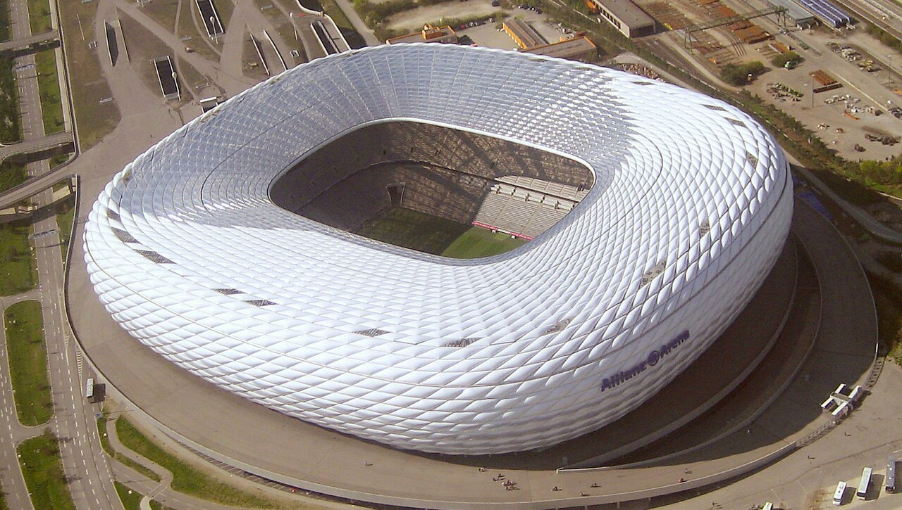

Treinador: Vincent Kompany
Vincent Kompany é o atual treinador do FC Bayern Munchen, cargo que assumiu após uma carreira lendária como capitão do Manchester City e da Seleção Belga. Reconhecido como um dos técnicos mais promissores da elite europeia.
Estádio: Allianz Arena
A Allianz Arena é o impressionante estádio do FC Bayern Munchen. Inaugurada em 2005, a arena tornou-se instantaneamente um dos maiores marcos arquitetónicos do desporto mundial, famosa pela sua fachada futurista que muda de cor de acordo com a equipa que está a jogar.

Estilo de Jogo:
O estilo de jogo que Vincent Kompany utiliza no FC Bayern Munchen baseia-se num futebol de extremo domínio, posse de bola sufocante, fluidez posicional e pressão alta ultra-agressiva.
"Mia san mia!"